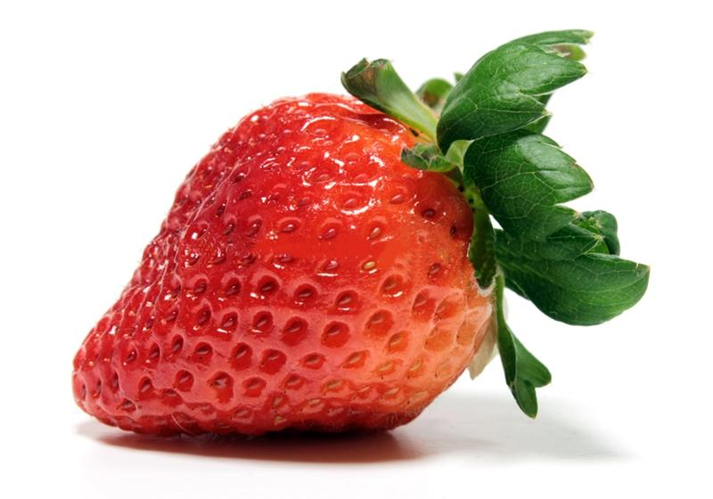

草莓
台灣草莓種植集中在苗栗大湖鄉，擁有「草莓王國」的美譽

如何挑選好吃的草莓
採草莓時最好挑選顏色鮮豔的草莓，顏色太白或是過青都是未成熟，如果肩部是白色就約8分熟。草莓一旦離枝後成熟度就中止，不會像其他瓜果還可催熟。此外要注意外表是否有損傷，草莓上的絨毛越長代表越少人碰過，越新鮮，而且越新鮮的草莓，身上的小顆粒是立起來的。
如何清洗草莓比較安心呢？
草莓的正確洗法是放進漏籃之內用清水慢慢沖洗，瀝乾後可用軟毛巾吸乾水分，入口前才將蒂頭拔除最好。草莓在栽培過程中容易受到污染，而且屬於重肥重藥的水果，建議食用前一定要清洗完全以保障食用安全，或是選擇擁有產銷履歷的產品更為安心。
資料來源: